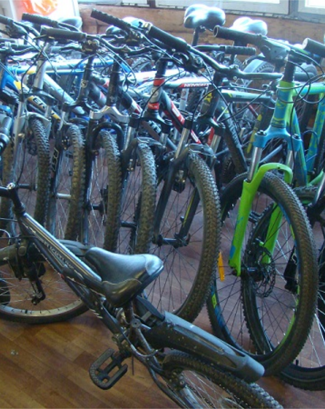

Что мы предлагаем
В нашей мастерской можно выполнить комплексное техническое обслуживание велосипеда, ремонт и настройку всех его узлов, шиномонтажные работы. Вовремя проведенное ТО велосипеда помогает избежать многих проблем и дорогого ремонта. Все работы выполняем качественно и с душой.
Приехав к нам однажды, многие наши клиенты становятся постоянными, а
часть из них даже друзьями.
А также в нашей мастерской можно отремонтировать электросамокат и
электровелосипед.
Годовое ТО
Выравнивание колес
Настройка переключателей

Аренда велосипедов
У нас вы можете взять на прокат хорошо обслуженные и настроенные велосипеды. Как раз мы находимся в прекрасном парке!